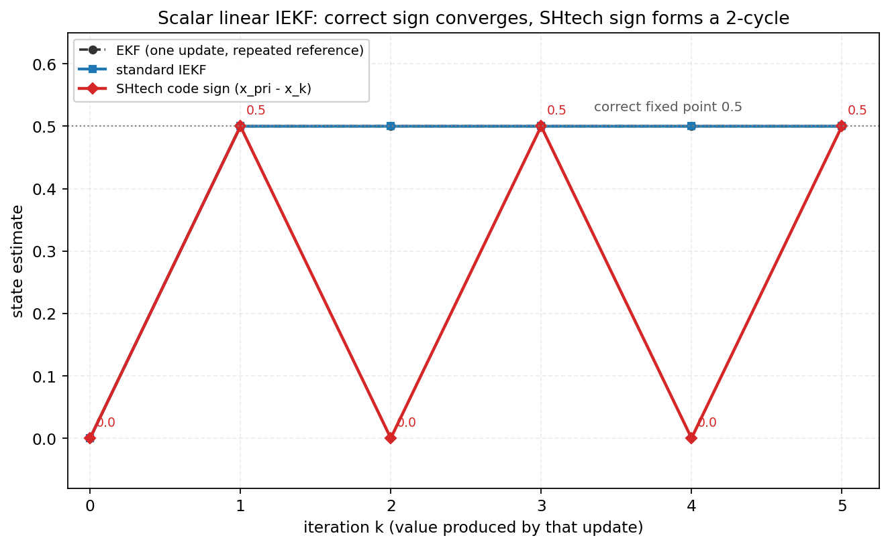

Lesson 0005 · 深入线
EKF → ESKF → IEKF：三种线性化
三套代码的差别，很大程度上是“在哪里线性化、线性化几次、误差用什么坐标表示”。这一节把这三个词拆开。
本节结束时你能
解释 EKF 为什么在强非线性时会偏；说出 IEKF 的迭代公式和先验项的作用；解释 ESKF 的“名义状态 + 误差状态”和右乘注入；判断 SHtech 的先验项符号对不对。
1. EKF：只线性化一次
观测 z = h(x) + v 是非线性的。EKF 在当前估计 x⁻ 处做一阶泰勒：
h(x) ≈ h(x⁻) + H (x - x⁻)
H = ∂h/∂x |_{x⁻}
K = P⁻Hᵀ(HP⁻Hᵀ+R)⁻¹
x⁺ = x⁻ + K(z - h(x⁻))
如果 h 弯曲得很厉害（比如目标很近、方位角变化大、旋转快），一阶近似就会偏：残差被映射到错误的方向，P 也会被低估。EKF 不会“错得离谱”，但会慢半拍、在强机动时抖。

H 和 K。图由 verify/verify_kf.py 生成。2. IEKF：线性化多次
IEKF 的想法：既然在 x⁻ 处线性化不准，那就在当前迭代点 x_k 处反复线性化，直到收敛。标准公式：
x_{k+1} = x_pri ⊕ K_k [ z - h(x_k) + H_k (x_k ⊖ x_pri) ]
K_k = P_pri H_kᵀ (H_k P_pri H_kᵀ + R)⁻¹
它来自对后验做高斯-牛顿。把 h(x) 在 x_k 处展开：
h(x) ≈ h(x_k) + H_k (x ⊖ x_k) x ⊖ x_pri ≈ (x_k ⊖ x_pri) + (x ⊖ x_k)
代进“先验 + 观测”的二次代价，解出的 x 就是上面的更新。先验项 H_k(x_k ⊖ x_pri) 的作用：把“当前迭代点相对先验的偏移”补回观测残差，保证迭代收敛到 MAP，而不是只做一次 EKF。
符号很容易写反
标准是
+H(x_k ⊖ x_pri)。SHtech 两处实现（IESEKF_Double_Armor.hpp:243、IESEKF.hpp:221）都写成 +H(x_pri ⊖ x_k)，差一个负号。标量线性例子 x_pri=0,P=1,H=1,R=1,z=1 下，标准 IEKF 一步到 0.5 并停住；代码符号会在 0.5 和 0 之间来回跳。数值实验见 verify/kf_report.md 和 verify/projects_report.md。

verify/verify_kf.py 生成。3. ESKF：把误差放到切空间
当状态里有旋转矩阵 R，直接对 R 做加法没有意义。ESKF 把状态拆成：
x = x̂ ⊕ δx 位置： c = ĉ + δc 姿态： R = R̂ · Exp(δθ)
δx 是误差状态，生活在切空间（欧氏），所以可以用普通 KF 传播。⊕ 是“注入”，⊖ 是“求差”：
inject(δ, x): c ← c + δc, R ← R · Exp(δθ) box_minus(x1,x2): δc = c1 - c2, δθ = Log(R2ᵀ R1)
预测：
x̂⁻ = f(x̂)
F = ∂/∂δ [ f(x̂ ⊕ δ) ⊖ f(x̂) ]_{δ=0}
P⁻ = F P Fᵀ + Q
更新：
H = ∂h(x̂ ⊕ δ)/∂δ K = P⁻Hᵀ(HP⁻Hᵀ+R)⁻¹ δ̂ = K(z - h(x̂)) x̂ ← x̂ ⊕ δ̂
右乘 R·Exp(δθ) 的含义：姿态误差作用在目标自身坐标系，不是世界系。这样 P 的旋转块不会被“旋转向量绕圈”污染，协方差更一致。

P 也明显偏大。图由 verify/verify_kf.py 生成。4. 三套代码分别用哪种
| 项目 | 滤波器 | 线性化点 | H 怎么来 | 姿态 |
|---|---|---|---|---|
| sp | EKF | x⁻，一次 | 解析链式法则 | 单 yaw，limit_rad |
| wuhan | ESKF | 误差状态，迭代 5 次 | 误差坐标中心差分 | SO(3) 右乘 |
| SHtech | IESEKF | x_k，迭代 5 次 | 解析 H | 单 yaw，limit_rad |
注意：wuhan 的 ESKF 是“误差状态 + 迭代”，SHtech 的 IESEKF 是“名义状态 + 迭代”。两者都在更新阶段多次线性化，但误差坐标不同：前者在切空间，后者在普通向量空间（yaw 单独归一化）。
5. 什么时候值得迭代
不是所有场景都需要 IEKF/ESKF：
- 目标远、角速度小、观测噪声大：EKF 的一阶近似够用，迭代是浪费；
- 目标近、角速度大、单板/斜视角：非线性强，迭代能明显降低线性化误差；
- 姿态有 roll/pitch、地面坡度：用 ESKF，否则 yaw 模型会把 roll/pitch 的误差吸收进 yaw；
- 算力紧：EKF 最便宜；ESKF 的数值 H 最贵。
数值后验
range-bearing、100 次 × 30 步：最终位置 RMSE EKF 0.159 m，标准 IEKF 0.159 m，
代码符号变体 23.21 m（发散）；首次更新 RMSE 分别为 0.574 / 0.375 / 60.45 m。标量例子：标准 IEKF 一步到 0.5 并停住；代码符号在 0.5/0 间振荡，
固定点 0.25，5 次迭代落点取决于奇偶。见
verify/verify_kf.py。
6. 三问自检
1. IEKF 相比 EKF，核心区别是？
2. ESKF 里姿态误差怎么注入？
3. 标准 IEKF 的先验项是？